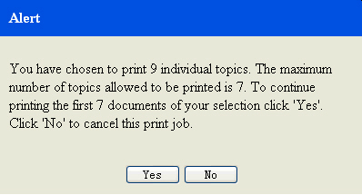

In dit onderwerp leest u hoe u een of meerdere onderwerpen in het Help-systeem kunt afdrukken.
Over deze taak
Voer in de view Navigatie de volgende stappen uit om een of meerdere onderwerpen af te drukken:
Procedure
- Klik op Onderwerpen afdrukken(
 ) op de werkbalk om het menu af te beelden.
) op de werkbalk om het menu af te beelden.- Om alleen het geselecteerde onderwerp af te drukken, klikt u op Geselecteerde onderwerp afdrukken.
- Om het geselecteerde onderwerp en alle onderliggende onderwerpen af te drukken, klikt u op Geselecteerde en alle onderliggende onderwerpen afdrukken. Het afdrukvoorbeeldvenster wordt geopend.
- Als u eerst de pagina-instellingen wilt wijzigen, selecteert u in het voorbeeldvenster en wijzigt u de instellingen.
- Klik op Afdrukken in het venster Afdrukken. Beperking:
MaxTopics en maxConnections zijn beperkingen voor snel afdrukken. Dit zijn parameters die zijn gedefinieerd in de voorkeuren voor resourceoptimalisatie voordat het systeem wordt gestart.
Als het aantal onderwerpen dat u afdrukt hoger is dan het gedefinieerde maxTopics, ziet u een Berichtvenster.Figuur 1. Voorbeeld van berichtvenster- Klik op Ja om door te gaan met afdrukken als u akkoord gaat met de maxTopics-grens.
- Klik op Nee om het afdrukken te annuleren.
Als het aantal printerverbindingen hoger is dan het gedefinieerde maxConnections, wordt er een Foutvenster afgebeeld.Figuur 2. Voorbeeld van foutvenster
- Klik op OK. En probeer het later opnieuw.